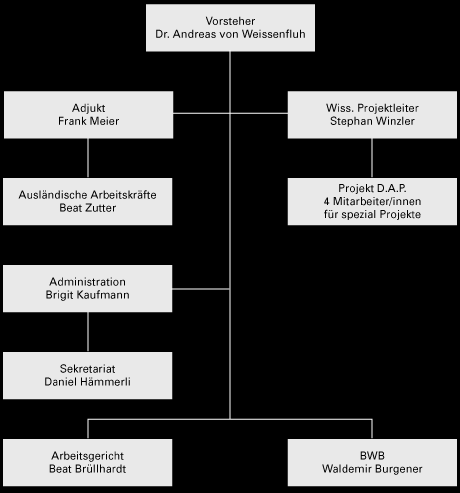

Das Wirtschaftsamt: Arbeitsraum auf Stadtgebiet und Region.
Das Wirtschaftsamt unterstützt Unternehmen bei Bauvorhaben. Es berät bei der Planungs- und Baubewilligungsphase und vermittelt Kontakte in Fragen der Versorgung und Entsorgung.
Das Wirtschaftsamt vermittelt Kontakte zur Fürderung zwischenbetrieblicher Zusammenarbeit.
Das Wirtschaftsamt fürdert den Technologietransfer. Es arbeitet mit der Technologievermittlungsstelle BE-TECH zusammen und unterstützt weitere Projekte zur Technologiefürderung.
Das Wirtschaftsamt berät und vermittelt in steuerlichen Fragen.
Das Wirtschaftsamt vermittelt
Leistungen der kantonalen Wirtschaftsfürderung wie
- Terrainbeschaffung (im ganzen Kanton Bern)
- Standortberatung
- Finanzierungshilfen (Bürgschaften, Zinsverbilligungen
auf Darlehen).
Das Arbeitsgericht vermittelt und urteilt in arbeitsrechtlichen Fragen. Die Mietämter sind Beratungs- und Schlichtungsstelle für Mieter und Vermieter. Beide Stellen sind organisatorisch dem Wirtschaftsamt zugeordnet.
